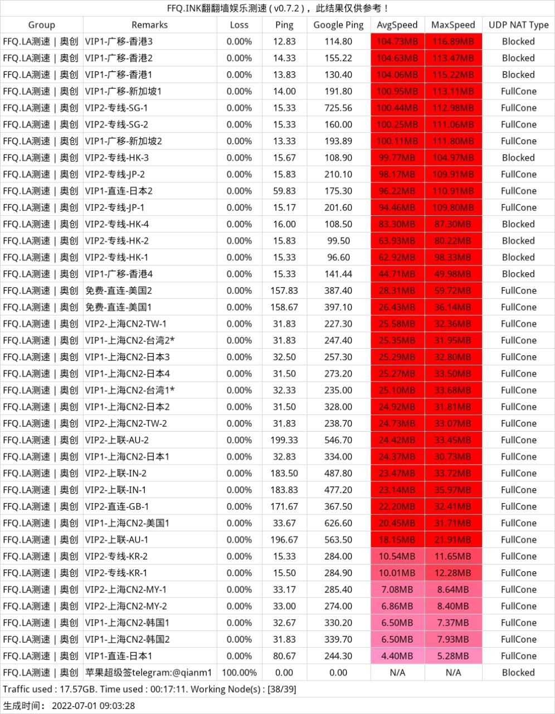

付费机场推荐
智能分流系统，国内网站直连，增强用户体验；Apple服务加速； 国外常用网站加速 (Google/Youtube/Twitter/Instgram/Github等)； 在传输过程中使用最强的加密方式，保护用户数据和隐私； 与诸多平台上的优秀应用程序兼容；
海外追剧，跨境电商的利器: 专为您有海外需求而设计的服务，随时随地，全平台高速访问。可靠的基础设施，提供便捷的诸多功能
高速稳定: 体验宛若身在海外的访问速度，适用于您的固网与移动网络。
跨平台兼容: 我们的服务适用于 macOS、iOS、Android、Windows。
全球互联: 通过 IXP 连接至全球内容提供商，更加快速。
在你心爱的电子设备中使用，无论是手机还是电脑，随时随处可用。
我们的服务适用于 macOS、iOS、Android、Windows 和 Linux，借助第三方客户端，可在手机、电脑、路由器、游戏机、电视盒子中使用。
解锁流媒体，观赏和聆听优质的内容: 通过 Gopass 的服务，可以观看包括 Netflix、Hulu、HBO、TVB、Happyon、AbemaTV 等在内的多种流媒体视频，聆听包括 Spotify、Pandora 等在内的流媒体音乐。
不要把宝贵的时间，浪费在等待上。即刻开启全球网络中继服务，在任何时间任何地点访问全球互联网。
*此页面为赞助商推广广告（恰饭广告），项目作者可以获得一定利润，支持本项目可以通过此邀请码注册账号，选择套餐购买。
2024年8月22日更新
2024年8月22日更新
VIP1 可使用 ≤ VIP1的节点
VIP2 可使用 ≤ VIP2的节点
¥ 25.00 / 30天
套餐流量: 200 GB
会员等级: Lv.2会员
等级时长: 30 天
设备支持: 同时在线: 4个设备
端口速率: 300Mbps
账号时长: 30 天
重置周期: 到期清零
VIP3-300G 全节点可用
¥ 35.00 / 30天
套餐流量: 300 GB
会员等级: Lv.3会员
等级时长: 30 天
设备支持: 同时在线: 6个设备
端口速率: 500Mbps
账号时长: 30 天
重置周期: 到期清零
VIP1长期支持版
¥ 288.00 / 3560天
套餐流量: 2000 GB
会员等级: Lv.1会员
等级时长: 3560 天
设备支持: 同时在线: 6个设备
端口速率: 300Mbps
账号时长: 3560 天
重置周期: 到期清零
VIP2长期支持版
¥ 488.00 / 3560天 VIP2长期支持版
套餐流量: 3600 GB
会员等级: Lv.2会员
等级时长: 3560 天
设备支持: 同时在线: 8个设备
端口速率: 400Mbps
账号时长: 3560 天
重置周期: 到期清零
2024年8月22日更新
官网 china.ctzcloud.org (国内访问) | 免费节点 | x1 倍率 | 50Mbps 速率